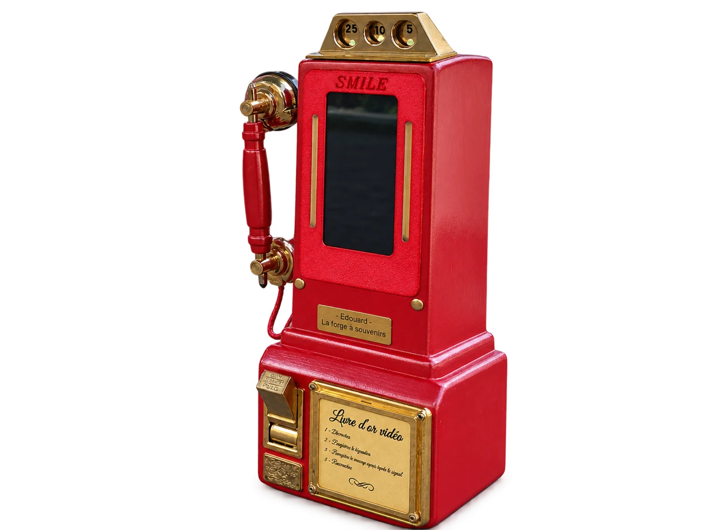
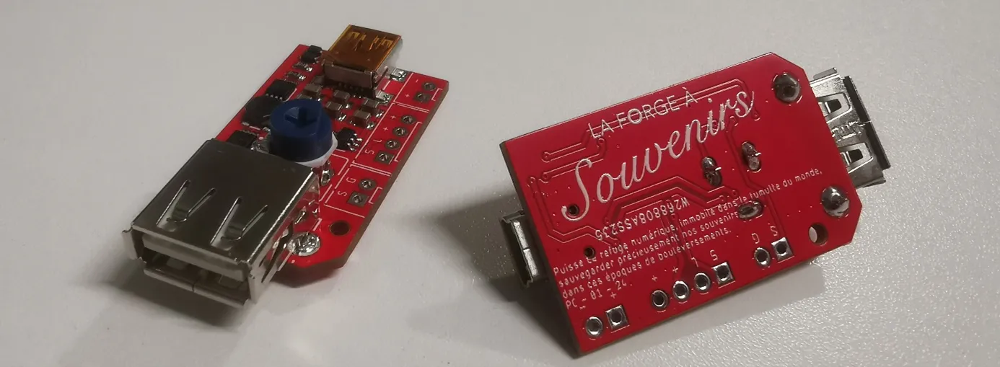
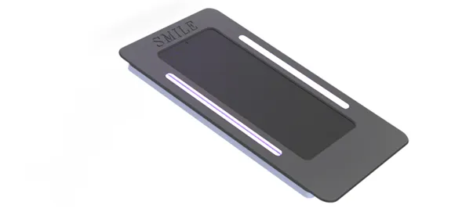
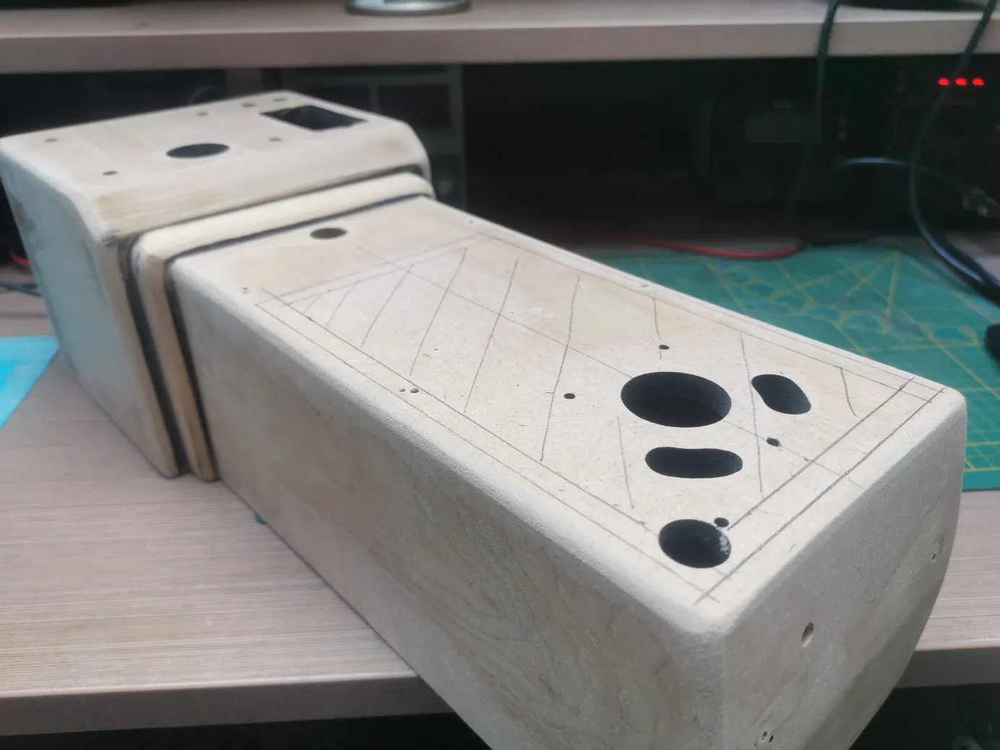
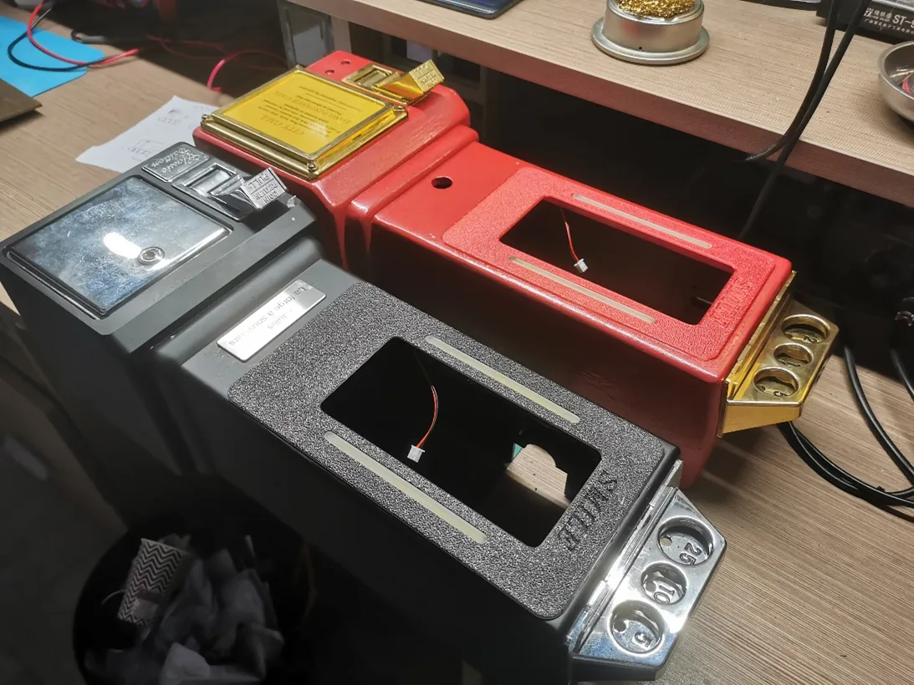
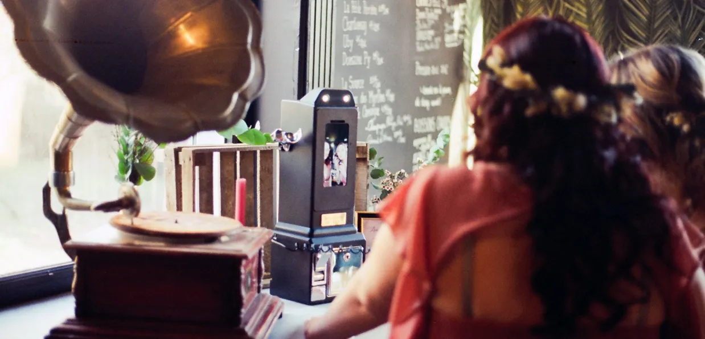
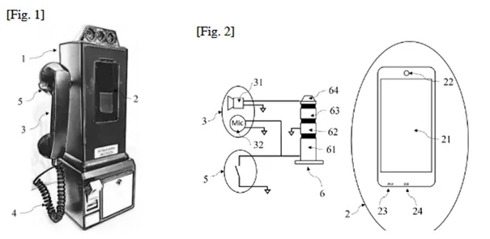

Permettre aux invités d’enregistrer un message vidéo en décrochant un combiné.
AndroidLED COBDétection du décrochéImpression SLA

Photographie retouchée pour la présentation.Le besoin
Permettre aux invités d’enregistrer un message vidéo en décrochant un combiné.
L’intervention
Électronique de commande, éclairage et intégration mécanique ; application Android développée avec un partenaire.
Le résultat
Deux exemplaires assemblés après les essais utilisateurs.
Besoin et contraintes
Analyse du besoin
Le projet visait à concevoir un dispositif destiné aux événements festifs (mariages, baptêmes, anniversaires) permettant aux invités d’enregistrer un message vidéo en toute simplicité. L’objectif était de dépasser les limites du livre d’or papier, souvent impersonnel, peu lisible et rédigé sans spontanéité.
L’usage devait être naturel : l’invité décroche un combiné, un message d’accueil apparaît à l’écran, puis le système lance automatiquement l’enregistrement.
Le système devait être compact pour faciliter son envoi partout en France, offrir une autonomie d’au moins 48 heures, et arborer un design simple et rétro, évoquant un téléphone d’époque et incitant à l’interaction.
Conception et architecture
Prototypage
Le cœur du système repose sur un smartphone. Ce choix, loin d’être un raccourci, s’est imposé comme le meilleur compromis entre qualité d’image, compacité et intégration. Un Samsung A51 a été sélectionné, notamment pour l’excellente qualité de sa caméra frontale et son écran lumineux.
Une couche d’électronique sur mesure a été ajoutée pour permettre la détection du décroché et du raccroché. Cette activation est perçue par l’application comme une sortie de veille, ce qui permet de préserver l’autonomie.
Cette carte commande également des LED COB, choisies pour leur lumière diffuse, douce et agréable afin d’éclairer les utilisateurs lors de l’enregistrement vidéo.

Carte électronique du vidéobook
L’application a été développée sous Android Studio par un partenaire. Elle lance un message d’introduction, affiche un compte à rebours accompagné d’un retour caméra, puis enregistre automatiquement la vidéo en Full HD. Pour éviter de vider la batterie du système en cas d’oubli de raccrochage, un timer de sécurité de 10 minutes a été implémenté. Il coupe l’alimentation du smartphone et éteint les LEDs.
L’application est verrouillée en mode KIOSK : il est impossible d’en sortir sans mot de passe, empêchant toute mauvaise manipulation et sécurisant l’application.
Réalisation et intégration
Concernant l’habillage physique du système, deux options ont été envisagées. La première consistait à concevoir une structure entièrement personnalisée, imprimée en 3D, à partir de matériaux plastiques. La seconde, plus économique et surtout plus charmante, consistait à détourner un ancien téléphone. C’est cette seconde voie qui a été retenue. Une réplique en bois d’un téléphone à pièces de 1912 a été sélectionnée. Elle présentait l’esthétique idéale, rétro et conviviale, tout en offrant suffisamment de volume pour intégrer les composants.
Des ajustements ont été nécessaires pour intégrer proprement le smartphone et la carte électronique. Une pièce sur mesure a été dessinée, puis imprimée en 3D SLA.

Intégration 3D du smartphone dans le vidéobook
Une découpe du boîtier d’origine et un peu de peinture ont permis d’obtenir une finition propre et fidèle au design original.

Boîtier en bois du vidéobook
Préindustrialisation
Suite au succès de cette première phase, deux modèles complets ont été assemblés selon la version validée. Baptisés Jules et Édouard, ces exemplaires rendent hommage aux aïeux de notre partenaire, tout en incarnant l’esprit vintage et le caractère singulier du projet.

Assemblage des vidéobooks Jules et Édouard
Essais et validation
Prévalidation
Après une série de tests techniques en atelier pour s’assurer de la conformité du dispositif au cahier des charges, le vidéobook a été mis à l’épreuve sur le terrain. Quatre groupes de bêta-testeurs ont eu l’opportunité d’utiliser gratuitement le système lors de leur mariage. En plus des retours d’expérience utilisateurs, des photos d’utilisation réelle ont été prises afin d’enrichir les supports de communication.

Utilisation terrain du vidéobook
Ces tests n’ont entraîné aucune modification majeure. L’interface a été jugée intuitive et plaisante. Seule une correction mineure a été apportée : l’augmentation de la puissance lumineuse des LEDs afin d’améliorer le rendu dans des environnements sombres.
Résultat et prochaines étapes
Conclusion
À l’image du photobooth, ce vidéobook est le fruit d’une collaboration étroite entre Orbivia et La Forge à Souvenirs. Le projet a fait l’objet d’une proposition de brevet intitulée « Système et méthode permettant d’enregistrer des messages audio et vidéo pour des événements spéciaux ». Orbivia a pris en charge l’intégralité de la rédaction technique ainsi que les modalités de dépôt en présoumission.

Illustration du dépôt de brevet
Les deux dispositifs sont aujourd’hui proposés à la location partout en France. Ils permettent de capturer des souvenirs sincères, vivants et authentiques.